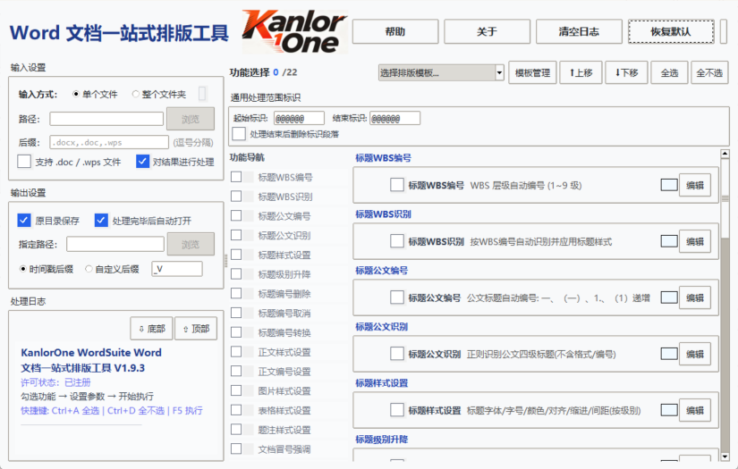

① 微云下载：https://share.weiyun.com/d56f8rp2
② 阿里云下载：https://www.alipan.com/s/HMbcHsbys5S
③ Gitee 仓库：https://gitee.com/kanlor/KanlorOne_WordSuite
KanlorOne WordSuite 是一款 Word 文档批量排版工具。简单来说，你可以用它一次性处理几十上百个 Word 文档，自动完成排版工作，不用一个个手动调整格式。
工具集成了 22 项常用排版功能，每一项都可以独立勾选、自由组合，执行顺序也能灵活调整。配置会自动保存，下次打开直接沿用上次设置。
_V，自动按 X.XX 格式递增版本号（如 报告_V1.00.docx、报告_V1.01.docx）。两种后缀可共存，布局固定为「自定义后缀在前，时间戳在后」。单文件模式下可勾选「对结果进行处理」（循环增量处理）和「处理完毕后自动打开」。以下功能按推荐执行顺序排列。免费标记的功能未注册用户可用，注册标记的功能需注册后使用。
将 Word 自动多级列表编号转为纯文字，脱离自动编号系统，方便自由编辑。需要安装 Microsoft Word。
设置纸张大小（A3/A4/A5/B5/Letter）、横纵向、页边距、装订线位置、页眉页脚距边距离。一次设置，所有文档统一。
清理制表符、不间断空格、零宽字符、控制字符等隐形垃圾。可替换手动换行符、清理多余空行、删除中英文之间和数字与字符间的多余空格。
智能保护：含图片的段落和 run 不会被误删。
自动识别段落开头的 WBS 编号（如"1.1 概述"），应用对应级别的标题样式。多层过滤避免误识别：目录行、日期、表格等都会被排除。
可指定识别层级：支持 1~9 级自由勾选，单选、多选、全选皆可，精确控制识别范围。
批量设置各级标题格式：字体、字号、颜色、对齐、缩进、间距。默认取消标题与多级列表关联，应用样式时不会自动显示编号。支持 cm 和字符两种缩进单位。
为标题自动生成层级编号（如"1 标题"、"1.1 子标题"），支持阿拉伯数字或中文数字样式。
批量设置正文格式：中英文字体、字号、加粗/斜体/下划线、颜色、对齐方式、缩进、段前后间距、行距。支持 cm 和字符两种缩进单位。
彻底执行：清除主题字体/颜色遮盖，确保格式设置生效。
统一表格格式：宽度比例、字体字号、首行加粗底色、居中对齐、最小化行高、清除缩进。横竖页面自适应：自动识别页面方向，按各自页面宽度计算表格实际宽度。
浮动图片转嵌入、超出宽度按比例缩小、居中对齐、清除缩进。横竖页面自适应：竖向和横向页面可分别设置最大宽度比例。
统一图/表题注格式：字体、字号、加粗/斜体/下划线、颜色、对齐、缩进、行距。支持分别设置图题注和表题注。
删除文档中无用的自定义样式，清理样式面板。可从模板文件加载标准样式，默认模板为根目录下 Template/KanlorOne_DocStyleTemplate.dotm。
查看和修改文档属性：标题、作者、主题、备注、类别、公司、经理等。只读属性（页数、创建时间等）灰色显示。
全面统计汉字数、非汉字字符数、总字符数、空格数、段落数、表格数、图片数、节数、行数、页数。默认开启处理前后对比，直观展示排版效果。
按公文规范识别一至四级标题：一级"一、"、二级"（一）"、三级"1."、四级"（1）"。默认识别已有大纲级别，对已有大纲级别但样式为"正文"的段落自动应用标题样式。
可指定识别层级：支持 1~4 级自由勾选，只处理需要的层级。
为公文标题添加编号：一级"一、""二、"、二级"（一）""（二）"、三级"1.""2."、四级"（1）""（2）"，按级别自动计数递增。
对全文标题统一升级、降级或转为正文。支持指定作用层级：1~9 级自由勾选，只处理选中的级别。
三种操作模式：升级（如三级→二级）、降级（如二级→三级）、转为正文（取消标题级别，恢复为普通段落）。
支持 WBS 编号与公文编号互转（WBS→公文、公文→WBS），以及 WBS 序号升级。彻底替换原有编号，支持 4~9 级标题。
删除标题前的编号文字，同时支持 WBS 编号体系和公文编号体系，一键清除所有标题编号。
可指定层级：1~9 级自由勾选，只删除选中层级的编号。
识别正文中的项目符号和编号列表，进行标准化处理。支持 5 种编号类型和自定义格式，自动设置悬挂缩进。
不影响原有样式：仅调整左缩进和悬挂缩进，保留字体、字号、加粗、间距等所有格式属性。
两种编号模式：连续编号（跨标题不断）和间隔编号（每个标题内从头开始）。
删除编号模式：一键删除正文中所有编号和项目符号，识别规则参照标题编号删除。
为冒号前的文字加粗或取消加粗，适用于"定义：说明""条款：内容"格式的文档。操作完成后输出统计数据。
中英文标点批量互换，智能保护数字间的小数点不被误替换。
使用正则表达式进行高级查找、替换和格式化操作，适合处理非标准格式的文档。
替换文本留空=删除匹配内容，同时支持 \1、\2 等捕获组引用。
处理范围标识用于在文档中标记需要处理的内容范围。通过在文档中插入起始标识和结束标识，可以让工具仅处理标识之间的内容，避免影响封面、目录等不需要排版的区域。
标识设置位于功能面板顶部的「通用处理范围标识」区域，一次设置，全局生效——所有勾选了「遵循范围标识」的功能都会自动应用此范围。
第一步：在功能面板顶部「通用处理范围标识」区域设置起始标识和结束标识（默认均为 @@@@@@）。
第二步：在 Word 文档中，找到需要处理内容的起始位置，在上一段落插入起始标识；找到结束位置，在下一段落插入结束标识。
第三步：勾选需要的功能，确保各功能的「遵循范围标识」复选框已勾选（默认勾选）。
如上所示，工具仅处理两个 @@@@@@ 之间的内容，封面和附录不受影响。
| 设置 | 说明 |
|---|---|
| 起始标识 | 工具从标识首次出现位置的下一段开始处理。留空 = 从文档开头处理。 |
| 结束标识 | 处理到标识首次出现位置的上一段结束。留空 = 处理到文档末尾。 |
| 标识相同 | 当起始标识与结束标识相同时（如均为 @@@@@@），第 1 次出现 = 起始，第 2 次出现 = 结束。 |
| 标识不同 | 可设置不同的起始和结束标识（如起始 @@START，结束 @@END），各自独立匹配。 |
| 未找到标识 | 如果文档中未找到设置的标识，起始标识未找到则从开头处理，结束标识未找到则处理到末尾。 |
「通用处理范围标识」区域还提供「处理结束后删除标识段落」复选框。勾选后，处理完成后自动删除包含标识的段落，输出文档中不会残留标识文字。
大部分内容级功能（如标题样式设置、正文样式设置、表格/图片/题注样式、字符清理、标点转换等）的参数面板底部都有一个「遵循范围标识」复选框：
这样可以在同一批次中，让某些功能只处理正文范围，而另一些功能处理全文。例如：标题样式设置勾选范围标识（仅处理正文标题），文档样式清理不勾选（清理全文样式）。
功能面板顶部下拉框提供两个内置模板，选择后自动加载预设功能和参数：
三步搞定：选择内置模板 → 按需微调功能勾选和参数 → 点击"从当前配置创建模板"命名保存。
点击"模板管理"可管理所有模板：创建、重命名、导入/导出、删除。内置模板不可删除。
| 用户类型 | 支持格式 | 说明 |
|---|---|---|
| 未注册用户 | .docx | 仅支持 .docx 格式 |
| 注册用户 | .docx / .doc / .wps | .doc 和 .wps 会自动转换为 .docx（需安装 Microsoft Word） |
| 版本 | 更新内容 | 发布日期 |
|---|---|---|
| v1.9.3 | 优化批量处理速度，修复WPS兼容问题 | 2026-07-11 |
| v1.9.2 | 品牌正式更名KanlorOne WordSuite，新增.doc/.wps格式自动转换支持，优化默认参数与内置模板，修复多项已知问题 | - |
| v1.9.1 | 新增统一范围标识管理引擎，图片/表格样式适配横竖页面，优化公文标题识别，新增标题编号替换功能 | - |
| v1.9 | 品牌全新升级，重构许可模式为免费功能+注册解锁，全面优化界面交互与日志体验，大幅提升运行性能 | - |
| v1.8.0 | 新增模板加密导入导出、文档数据统计、文档属性设置功能，上线全局快捷键与侧边导航拖拽排序 | - |
| v1.7.0 | 新增文档属性与数据统计模块，侧边导航栏支持勾选与拖拽排序，优化日志展示与模板管理 | - |
| v1.6 | 统一功能命名规范，分栏尺寸持久化记忆，优化日志排版与属性面板体验 | - |
| v1.5 | 侧边导航复选框双向状态同步，新增恢复默认按钮，加宽导航栏并统一日志格式 | - |
| v1.4 | 拆分系统配置与用户模板存储目录，修复非注册版文件覆盖问题，新增启动快捷键提示 | - |
| v1.3 | 上线全套全局快捷键，统计弹窗独立展示，优化文档属性面板双栏布局 | - |
| v1.2 | 完善模板管理功能，重构极简日志展示，规范功能默认排序，优化标语编辑交互 | - |
| v1.1 | 新增文档多维度统计与属性读写功能，落地侧边导航方案，支持分栏尺寸记忆 | - |
| v1.0 | 基础Word批量处理框架正式上线，支持多功能组合、批量文件处理与基础模板管理 | - |
查看日志末尾的输出路径。时间戳后缀格式如"报告_20260709200000.docx"。点击日志中的路径可直接打开文件夹。
未注册用户：仅支持 .docx 格式。
注册用户：支持 .docx、.doc、.wps 格式。工具会自动将 .doc 和 .wps 文件转换为 .docx 格式后再处理，需要安装 Microsoft Word（用于 COM 转换）。转换后输出为 .docx 文件，后续所有功能都基于 .docx 执行。
工具已针对此问题优化：.wps 文件转换后会进行二次保存，确保格式完全标准化。如果仍然出现此提示，请点击"是"恢复内容，处理结果依然有效。
常见原因：段落 run 中带有主题字体或主题颜色属性，遮盖了显式设置。本工具已自动清除这些主题属性，确保参数执行彻底。
如果还有问题，可在 Word 中选中段落按 Ctrl+Space 清除直接格式。建议排版后不要再手动调格式。
此功能需要 Microsoft Word 环境。如果电脑已安装 Office，重启工具后再试。该功能会显示"需 Word"标记。
调整"一级最大序号"参数（默认 10），可过滤日期格式。也可以用处理范围标识限定处理范围来避免误识别。
公文规范通常用字符（如首行缩进 2 字符），科技文档常用 cm（如 0.74cm ≈ 2 字符）。两种单位可随时切换。
选择"整个文件夹"后勾选"包含子文件夹"，工具会递归扫描所有子目录中的文档。
重置功能选择、窗口尺寸、日志内容、输入输出路径、功能执行顺序、处理范围标识。恢复为初始默认状态。
勾选后，每次执行完会自动把输出文件作为下一次的输入文件，实现循环增量处理。适合反复调试排版效果的场景。
使用方法：选择单个文件 → 勾选「对结果进行处理」 → 勾选需要的功能 → 点执行 → 再点执行（自动对上次结果处理）→ 可反复执行。
首次执行使用原始输入文件，从第二次开始自动使用上一次的输出文件。可与「处理完毕后自动打开」组合使用，边处理边查看效果。
不会。正文编号设置仅调整左缩进和悬挂缩进，不影响字体、字号、加粗、颜色、间距等任何其他格式属性，原有样式完全保留。
连续编号：整个有效范围内编号从头到尾连续，中间遇到标题不会中断，跨标题持续计数。
间隔编号：每个标题范围内（无论级别）的编号都从 1 开始，遇到下一个标题时重新计数。
标题编号：使用「标题编号删除」功能，可同时删除 WBS 编号和公文编号，支持指定层级。
正文编号：使用「正文编号设置」功能，选择「删除编号」模式，一键删除正文中所有编号和项目符号。
时间戳后缀：每次执行时自动添加当前时间戳（如 报告_20260709200000.docx），适合区分同一文档的不同处理时间。
自定义后缀：默认值为 _V，自动按 X.XX 格式递增版本号（如 报告_V1.00.docx、报告_V1.01.docx），适合版本管理。
两种后缀可共存：布局固定为「自定义后缀在前，时间戳在后」（如 报告_V1.00_20260709200000.docx），每种只出现一次。
切换后仅更新对应后缀：从时间戳切换到自定义时，保留原时间戳，仅更新版本号；从自定义切换到时间戳时，保留原版本号，仅更新时间戳。切换后立即生效，下次存储按最新规则执行。
日志窗口右上角有「⇧ 顶部」和「⇩ 底部」按钮，点击可一键直达顶部或底部。配合右侧垂直滚动条，可方便快速上下拖动查看日志内容。
点击序号输入框时边框会高亮突出，提示当前处于编辑状态。如果没有修改或删除内容后没有输入新值，失去焦点时会自动恢复原序号，避免误操作导致序号丢失。
| 快捷键 | 功能 |
|---|---|
| Ctrl + A | 全选所有可用功能 |
| Ctrl + D | 取消所有功能选择 |
| F5 | 开始执行 |